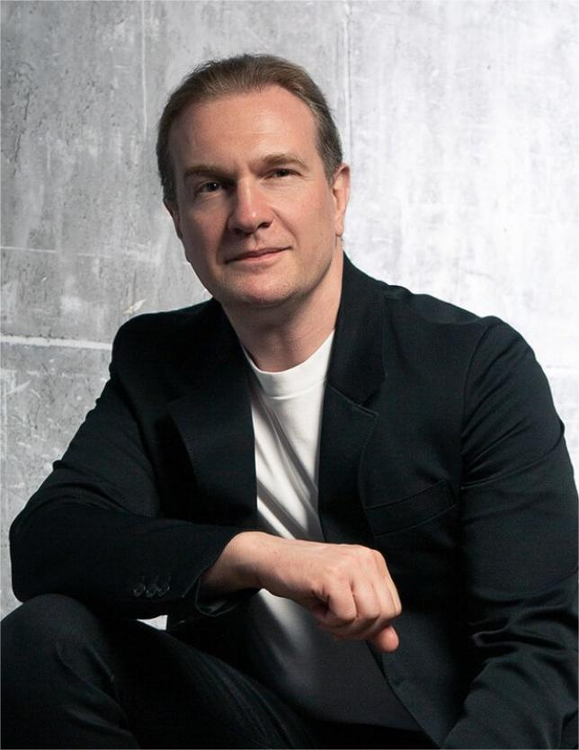
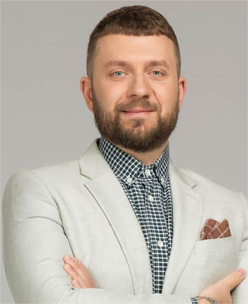
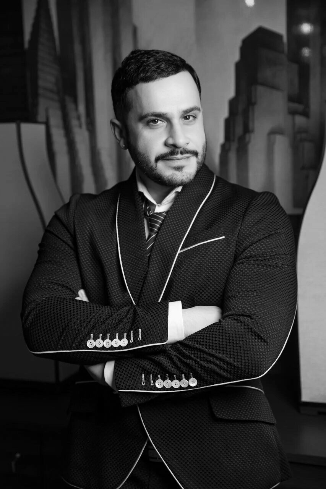

ИНТЕРВЬЮ С ДИЗАЙНЕРАМИ
«Люди думают, что интерьер — это покрасить стены в красивые цвета».
Олег Клодт о дизайне
— Олег, вы уже больше двадцати лет в дизайне интерьеров. Какие
преграды
и сложности были на вашем пути?
— Не скажу, что были сложности. Скорее — саморазвитие в течение
двадцати лет, которое, надеюсь, продолжится. Окончив архитектурный
факультет, все обычно хотят строить города, небоскрёбы. Но быстро
понимают, что это невозможно, да и рынок такой, что лучше
самореализовываться в интерьерах.
Мои первые проекты были малобюджетными. Мы придумывали авторские
кухни, шкафы, встроенную мебель. Иногда
экономя деньги заказчика, иногда потому, что работали с небольшими лофтами, где это было органично.
Потом пришли уже более обеспеченные клиенты с другими запросами
— например, на классические интерьеры. Тогда я понял, что мне очень
не нравится готовая лепнина, которую предлагают компании, — её масштаб,
пропорции. И начал разрабатывать лепнину сам. В этом интерес
профессии — ты можешь творить без ограничений: от дверной ручки до чего
угодно.

В интерьере должна быть душа семьи
— Правда ли, что хороший дизайнер всегда хороший психолог?
— Это, безусловно, так. Я иногда шучу, что финалом моей карьеры станет какое-нибудь пособие по психологии. Особенно сложно работать с парами. Половина пар выстраивает взаимодействие так: один партнёр делегирует другому ремонт и принимает всё, что будет создано. Это довольно простой вариант. Во втором типе пар супруги в равной степенивовлекаются в процесс, но у них абсолютно разный вкус, и мне приходится их ещё раз «женить». Вот это уже интересный челлендж — попасть во вкус обоих и никого не обидеть. Помню случай, когда одна пара буквально развелась у меня в кабинете. Они поругались, супруга выбежала из кабинета, хлопнув дверью, а потом я узнал, что через две недели они разошлись.
— Вот это да… А как понять, какой перед вами человек и что ему нужно?
— «Прочитать» клиента с самого начала невозможно. Ты приблизительно понимаешь, что перед тобой за человек, какие у него возможности и бэкграунд, но почти все люди очень закрытые. И тебе надо правильно себя вести, чтобы помочь им раскрыться и показать истинных себя. Только тогда станет ясно, что человеку действительно нужно, и мы сумеем создать действительно подходящий ему продукт. Я всегда подчёркиваю: частные интерьеры хороши только тогда, когда это не просто стильное произведение искусства, а портрет клиента — лицо его семьи, отражение её внутреннего мира. Лица дизайн-студии в интерьере быть не должно.
— Есть способ помочь клиенту открыться?
— Важно уметь слушать и по-настоящему слышать, то есть улавливать то, что находится на более глубоких уровнях слов, за пределами поверхностного восприятия. И быть абсолютно честным, чтобы люди чувствовали, что ты с ними открыт и естественен. Ни в коем случае нельзя строить из себя кого-то, кем ты не являешься.
— На первом этапе вы знакомитесь с клиентом, дальше идёт стадия эскизных и дизайн-проектов. Нужно ли показывать клиенту эти проекты?
— Можно обойтись и без этого, но только с давними клиентами. У меня такие есть — они пришли ко мне почти двадцать лет назад с запросом на классический интерьер в московской квартире. Мы так с ними сдружились, что, когда я проектировал их загородный дом, мы не делали никаких картинок. Конечно, я нарисовал им экстерьер, но всё остальное было уже на полном доверии. Это нормально, когда стороны связывают близкие отношения и каждый понимает, чего ждать от другого.
А вот новым клиентам визуализация необходима. Мы не можем быть уверены, что с первого раза их правильно услышали и поняли. Недавний пример из практики — мы сделали напольный орнамент для девелоперских заказчиков. Он им не понравился, и они захотели сами подобрать подходящий. Я согласился, и они прислали мне точно такой же паттерн. Абсолютно! Настолько у людей разное восприятие света, цвета, ракурсов — никогда не угадаешь. Именно поэтому у меня в бюро сидят десять высококлассных специалистов по 3D-моделированию, которые делают совершенно фотореалистичные картинки. Это самая расходная часть в нашем бизнесе, но без неё, увы, никак.
«Дизайнер интерьера должен любить людей».
Интервью со Степаном Бугаевым

Степан, расскажите немного о себе, о вашем
карьерном пути и том, как Школа дизайна появилась в вашей жизни?
Я закончил Московский физико-технический институт, а после — Высшую школу экономики,
факультет бизнес-информатики. Это как раз был их первый магистерский набор. Потом судьба
занесла меня в компанию, которая занимается умными домами. В ней я проектировал систему
беспроводных умных домов, и мы были пионерами этой технологии на тот момент. Сейчас эта
технология используется чуть ли не во всех устройствах Яндекса и стала очень распространенной.
Когда мы делали эти дома, я очень много смотрел на то, как мои коллеги по цеху, которые занимались
более полноценными умными домами, проектируют эти системы, а параллельно с ними на
очень больших проектах трудятся дизайнеры-архитекторы. Для меня это всегда было
крайне интересно, и я обязательно ездил на эти объекты. Область архитектуры и дизайна
интерьера показалась мне очень востребованной.
Благодаря образованию в области бизнес-информатики и по своему характеру я обладаю стремлением все упорядочивать, и я решил, что начну делать свой бизнес в дизайне интерьера, архитектуре, управлении проектами в проектировании и строительстве. Так что я 15 лет занимался своей компанией и настройкой этой деятельности, и мы много чего сделали за это время. В нашей студии «Точка дизайна» очень большой штат — порядка 100 человек, студия уверенно чувствует себя на рынке в Москве, и мы входим в разные классные рейтинги. У нас сумасшедше-крутые заказчики — лучшие девелоперы страны, частные клиенты. Мы реализовали уже более 2000 проектов.
6 лет назад меня приглаили сделать короткий курс в Школе дизайна. Созданный мной курс оказался успешным, мы поговорили с руководителем Школы дизайна Арсением Мещеряковым, и он предложил мне заняться всеми курсами по интерьеру. После этого были созданы курсы дополнительного образования, а на данный момент открыта вся линейка курсов направления: ДПО, магистратура, бакалавриат и онлайн-бакалавриат. Сейчас я штатный преподаватель Школы, куратор направления «Дизайн интерьера».
Расскажите о самых интересных, сложных, необычных задачах и проектах, с которыми вам приходилось сталкиваться в своей практике?
Каждый проект — по-своему сложный и необычный. Траектория развития усложнения проектов выстраивается так, что каждый следующий проект, который нам доверяют, всё более сложный. Это широкое разнообразие — частные проекты, большие дома по несколько сотен метров, пентхаусы.
Моя настоящая страсть — это общественные интерьеры — места, которыми пользуется большое количество людей. На сегодняшний день мы спроектировали интерьер школы в Люберцах, несколько стоматологических клиник, сделали реконструкцию библиотеки в городе Апатиты. Также на сегодняшний день мы проектируем практически все жилые дома. Это могут быть интерьеры квартир, которые продает застройщик с готовой отделкой, либо места общего пользования — лобби, входные группы. Мы работаем со звездами и делаем интерьеры для их квартир и домов: телеведущий Андрей Малахов, маркетолог номер один в нашей стране Игорь Манн, тренер сборной России по фигурному катанию Этери Тутберидзе. К каждому проекту мы относимся как к особенному.
Интервью с дизайнером интерьеров
Вадимом Матевосянц

— Вадим, вы являетесь владельцем дизайн студии VERDIZ. Расскажите о идеи ее создания,
о философии работы, значимых проектах.
— Создание полноценной дизайн студии -
результат многолетней работы. В связи с кратным увеличением заказов, как от частных
клиентов, так и от бизнеса, появилась необходимость создать свою команду
профессионалов-единомышленников, которая помогала бы мне реализовывать в жизнь
мои идеи.
Долго думал над названием компании)))
Позже пришла идея заимствовать девичью фамилию матери и немного изменить ее,
получилось VERDIZ.
Философией нашей команды, ее девизом является фраза: «Стиль - как образ жизни!»
Если берёшься за проект, то важно выполнить его качественно и с душой, стильно
и функционально! По этой причине, каждый свой интерьер считаю значимым
и уникальным.
Помните свой первый реализованный проект? Было сложно?
Конечно, это трехкомнатная квартира в классическом стиле. Было безумно интересно. До сих пор вспоминаю, как я подбирал столовые приборы, смесители, аксессуары. Внимание к каждой детали. Вложил душу в этот проект)) Заказчик был доволен.
В России сейчас настоящий бум дизайнеров. Появляются всевозможные школы дизайна и различные курсы. Это приводит к жёсткой конкурентной борьбе за заказчика? Или у вас есть неоспоримые преимущества перед ними?
Довольно часто новоиспеченные дизайнеры, чтоб привлечь заказчика, устанавливают минимальную стоимость за проект. Демпингуют, так сказать) Конечно заказчикам это нравится, но нередко к ним приходит разочарование после подобного взаимодействия . Я не виню никого, это жизнь и каждый имеет право на самореализацию. Безусловно и среди молодежи есть самородки. Преимущества у меня безусловно есть - это богатый накопленный опыт и мое чувство стиля. Да и обычно меня приглашают к сотрудничеству по рекомендации.
Да, я много лет посвятил фэшн-индустрии. Не жалею об этом ничуть. С детства у меня были две мечты - шить и строить дома. Вторая мне импонировала больше, хотелось сделать что-то грандиозное, чтобы запомниться, оставить след. Правда, так сложились обстоятельства, я пошёл учиться на портного, потом на конструктора одежды. Затем сбылась моя мечта, я начал работать в Доме моды «Валентин Юдашкин». Сами понимаете, когда сбывается мечта, начинаешь мечтать снова! Тогда я прошёл обучение по переподготовке по Дизайну на базе высшего образования, таким образом воплотил свою вторую мечту в жизнь!
Вадим, вы работали с известными домами моды, но все же предпочли дизайн интерьеров. Почему сделали такой выбор?
Да, я много лет посвятил фэшн-индустрии. Не жалею об этом ничуть. С детства у меня были две мечты - шить и строить дома. Вторая мне импонировала больше, хотелось сделать что-то грандиозное, чтобы запомниться, оставить след. Правда, так сложились обстоятельства, я пошёл учиться на портного, потом на конструктора одежды. Затем сбылась моя мечта, я начал работать в Доме моды «Валентин Юдашкин». Сами понимаете, когда сбывается мечта, начинаешь мечтать снова! Тогда я прошёл обучение по переподготовке по Дизайну на базе высшего образования, таким образом воплотил свою вторую мечту в жизнь!
Тут вы найдёте лучшие советы по созданию уюта
в вашем доме - HouseGlam
Связаться с нами
Наши соцсети